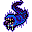

不死者の召喚 Summon Undead
英語版 CrawlWiki の記事「Summon Undead」(0.34 向け、2026-07-16 版)の翻訳です。原文の著者は編集履歴をご覧ください。
| 複数のアンデッドのモンスターを召喚し、様々な幽霊、吸血鬼、レイス、その他の下位のアンデッドを生み出す。 |
不死者の召喚はモンスター専用の呪文で、術者の周りにアンデッドのモンスターを何体も召喚する。弱いものが多いが、皮剥げ幽霊は終盤のキャラクターにとっても脅威だし、レイスはどの種類もあなたを減速させてくるし、幻想の戦士は意志力を削ってくる。
召喚される数は 1 + 1d(HD/5 + 1)。召喚されうるモンスターは次のとおりで、どれも同じ確率で選ばれる。[1]
| W  ベス・ケムワル |
V |
W |
Z |
| Z |
Z |
z |
M |
| V |
z |
W |
W |
| W |
W |
W |

派生アンデッド(ゾンビ、骸骨、幻像、幽体)の元になるモンスターは、そのときいる分岐によって変わる。
不死者の召喚を唱える敵は次のとおり。
変更履歴
- 0.34 より前は骸骨も召喚されたが、このバージョンで骸骨はドラウグルになった。また、このバージョンでベス・ケムワルが召喚されうるモンスターに加わった。
- 0.26 で削除されるまでは、飢えた幽霊もこの呪文で召喚された。
- この呪文で召喚されるモンスターの多くは、0.13 で大きく変わった。
出典
- ↑ mon-cast.cc:5545 (0.34.1)